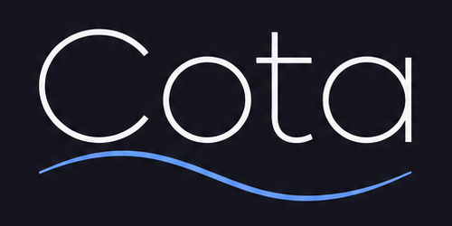

O diário do rio que ninguém consegue apagar A river diary nobody can erase
Em maio de 2024 o Guaíba subiu mais do que em qualquer registro e Porto Alegre ficou debaixo d'água. Mais de 180 pessoas morreram no Rio Grande do Sul. Depois, todo mundo fez as mesmas perguntas: quem sabia? Quem avisou, e quando?
Era difícil responder. Sites de previsão sobrescrevem as previsões antigas, avisos oficiais saem do ar quando vencem e planilhas podem ser editadas depois. O Cota é o registro que faltava: todo dia ele grava o que se sabia sobre o rio num lugar público, onde qualquer pessoa pode ler e ninguém pode alterar.
In May 2024 the Guaíba river in southern Brazil rose higher than ever recorded and Porto Alegre went underwater. More than 180 people died in Rio Grande do Sul. Afterwards, everyone asked the same questions: who knew? Who warned us, and when?
Those questions were hard to answer. Forecast websites overwrite old forecasts, official warnings go offline when they expire, and spreadsheets can be edited later. Cota is the record that was missing: every day it writes what was known about the river to a public place, where anyone can read it and nobody can change it.
Escolha um local para ver os dados Choose a location to see its data
O seu rio não está na lista?Your river isn't listed? Peça um novo localRequest a new location ↗
Protótipo de pesquisa. O Cota não emite alertas oficiais. Alertas oficiais: SMS 40199, Defesa Civil. Research prototype. Cota does not issue official warnings. Official alerts in Brazil: SMS 40199, Defesa Civil.
Como funcionaHow it works
Um caderno público sobre o rio, escrito todo dia A public notebook about the river, written every day
-
1
Olha o rio e a chuvaIt watches the river and the rain
Três computadores separados consultam, cada um por conta própria, os dados públicos de chuva, de vazão do rio e da previsão do tempo.
Three separate computers each check, on their own, public data on rain, river flow and the weather forecast.
-
2
Anota o que viuIt writes down what it saw
O que pelo menos dois deles viram igual vai para um registro público que não pode ser apagado nem editado depois, nem por quem criou o Cota.
Whatever at least two of them saw the same goes into a public record that can't be erased or edited later, not even by Cota's creator.
-
3
Avisa com dias de antecedênciaIt warns days ahead
Quando a chuva prevista para a bacia é grande o bastante para encher o rio, sai um alerta antecipado. O alerta também fica registrado, com data e hora.
When the rain forecast for the basin is big enough to flood the river, an early warning goes out. The warning is recorded too, with its date and time.
-
4
Qualquer pessoa confereAnyone can check
Os botões "verificar" refazem as contas no seu próprio navegador. Você não precisa confiar neste site para saber se os números são os originais.
The "verify" buttons redo the math in your own browser. You don't have to trust this website to know the numbers are the original ones.
Ao vivoLive
Como está o rio agoraHow the river is doing now
Avisos oficiais do INMET para o RS registrados pelo comitê Official INMET warnings for Rio Grande do Sul recorded by the committee
O INMET tira o aviso do site quando ele vence. Aqui fica uma cópia de cada versão que pelo menos 2 dos 3 nós viram, com a hora em que foi gravada (o SHA-256 do conteúdo vai para a devnet; o slot prova que ela existia, no máximo, naquele momento).
INMET takes a warning off its site once it expires. This keeps a copy of every version that at least 2 of the 3 nodes saw, with the time it was recorded (the SHA-256 of the content goes to devnet; the slot proves it existed by that moment at the latest).
Alerta antecipadoEarly warning
Chuva forte na bacia avisa a cheia dias antes Heavy rain in the basin warns of a flood days ahead
O Guaíba enche alguns dias depois de chover muito nos rios que correm para ele. Por isso o Cota olha a previsão de chuva para os próximos 5 dias em toda a bacia. Se ela passa de 90 mm, sai o alerta, em geral de 4 a 7 dias antes de o rio transbordar.
The Guaíba fills up a few days after heavy rain on the rivers that flow into it. So Cota looks at the rain forecast for the next 5 days across the whole basin. If it goes over 90 mm, the warning goes out, usually 4 to 7 days before the river overflows.
Arraste a janela azul embaixo, ou as bordas dela, para escolher o período. Passe o mouse no gráfico para ver cada dia.
Drag the blue window below, or its edges, to pick a period. Hover over the chart to see each day.
Informações técnicasTechnical details A regra exata, os números do teste e as perspectivas gravadas na blockchain, com verificação. The exact rule, the test numbers and the outlooks recorded on the blockchain, with verification.
A regra contra fev/2024 – out/2026, fora da amostra de calibração The rule against Feb 2024 – Oct 2026, outside the calibration sample
Perspectivas registradas pelo comitêOutlooks recorded by the committee
Logo depois de ancorar o lote do dia D, cada nó baixa a rodada 00Z de D de cada modelo, soma a chuva de D+1 a D+5 nos 6 pontos e assina. O programa só aceita o registro enquanto D for o último dia ancorado, e decide sozinho se a regra disparou.
Right after day D's batch is anchored, each node downloads every model's 00Z run for D, adds up the rain from D+1 to D+5 at the 6 points and signs it. The program only accepts the record while D is the last anchored day, and decides on its own whether the rule fired.
Cofres paramétricosParametric vaults
Dinheiro que se libera sozinho quando o alerta sai Money that releases itself when the warning goes out
Numa cheia, o dinheiro de emergência costuma chegar depois da água. Com o Cota, alguém (um fundo da Defesa Civil, uma seguradora, uma ONG) pode travar dinheiro com uma regra escrita: "se sair alerta antecipado para o Guaíba, pague tanto para esta conta". Quando o alerta é registrado, o programa confere e paga sozinho, sem ninguém precisar aprovar.
In a flood, emergency money usually arrives after the water. With Cota, someone (a civil defense fund, an insurer, an NGO) can lock money under a written rule: "if an early warning goes out for the Guaíba, pay this much to this account". When the warning is recorded, the program checks it and pays on its own, with nobody having to approve it.
- Dinheiro travadoMoney locked com beneficiário, valor por evento e prazo fixos with a fixed beneficiary, amount per event and term
- Alerta registradoWarning recorded o comitê do Cota grava o alerta antecipado Cota's committee records the early warning
- Pagamento automáticoAutomatic payout o programa confere o alerta e paga, uma vez por evento the program checks the warning and pays, once per event
Na devnet da Solana, com SOL de teste. O criador do cofre só recupera o saldo depois do vencimento.
On Solana devnet, with test SOL. The vault's creator only gets the balance back after it expires.
Teste com a cheia de abril–maio de 2024 Test run on the April–May 2024 flood O sistema rodado dia a dia sobre os dados de 2024, como se já estivesse no ar. Material para a banca avaliadora. The system run day by day over the 2024 data, as if it had already been live. Material for the judges.
Vazão do Guaíba: observada × prevista Guaíba river flow: observed × forecast
Vazão diária modelada pelo GloFAS (m³/s), não nível de régua. Clique em um dia para ver os detalhes.
Daily flow modelled by GloFAS (m³/s), not gauge level. Click a day to see its details.
Linha do tempoTimeline
Um lote por dia (UTC). Assinaturas dos nós, alertas emitidos e fontes degradadas.
One batch per day (UTC). Node signatures, alerts issued and degraded sources.
Leituras ancoradas neste loteReadings anchored in this batch
Qualidade das fontesSource quality
Índice de confiança Cs por estação e dia (disponibilidade, flags de sensor, concordância entre nós,
frescor). Abaixo de 0,6 o agregador grava SourceDegraded on-chain.
Confidence index Cs per station and day (availability, sensor flags, agreement between nodes,
freshness). Below 0.6 the aggregator writes SourceDegraded on-chain.
Como verificarHow to verify
- Leitura → lote. Cada leitura vira uma folha SHA-256 (bytes Borsh, prefixo 0x00) de uma árvore Merkle RFC 9162. O botão verificar recalcula a folha e a prova de inclusão aqui no navegador e compara com a raiz lida da devnet naquele momento.
- Lote → comitê. O programa só aceita o lote com ≥ 2 assinaturas Ed25519 distintas de membros do comitê, verificadas pelo precompile da Solana na mesma transação, e encadeado na raiz anterior.
- Previsão → antes. O programa recusa previsões cujo alvo já está em um lote ancorado. O slot da previsão é menor que o slot do lote que contém a observação.
-
Modelo → reprodutível. LightGBM quantílico treinado em 1997–2023 de forma determinística;
identifica os arquivos do modelo e a calibração.
- Reading → batch. Each reading becomes a SHA-256 leaf (Borsh bytes, 0x00 prefix) of an RFC 9162 Merkle tree. The verify button recomputes the leaf and the inclusion proof right here in the browser and compares it with the root read from devnet at that moment.
- Batch → committee. The program only accepts a batch with ≥ 2 distinct Ed25519 signatures from committee members, checked by Solana's precompile in the same transaction, and chained to the previous root.
- Forecast → before. The program rejects forecasts whose target is already in an anchored batch. The forecast's slot is lower than the slot of the batch holding the observation.
-
Model → reproducible. Quantile LightGBM trained deterministically on 1997–2023;
identifies the model files and the calibration.
Como ler este painelHow to read this page Os gráficos, as palavras que aparecem o tempo todo e o que o botão verificar prova. The charts, the words you'll see everywhere and what the verify button proves.
A ideia: o Cota anota, com data e hora que ninguém consegue apagar, o que se sabia sobre o rio a cada dia. Quanto choveu, quanta água passava, o que o modelo previa e quais alertas saíram. Depois de uma enchente, dá para provar quem avisou o quê, e quando. Não precisa entender de blockchain: dá para ler o painel como um boletim sobre o rio.
The idea: Cota writes down, with a timestamp nobody can erase, what was known about the river each day. How much it rained, how much water was flowing, what the model predicted and which alerts went out. After a flood, you can prove who warned what, and when. You don't need to know anything about blockchains: you can read the page as a bulletin about the river.
Como ler o gráfico do rioHow to read the river chart
Uma previsão boa é a linha azul passando por dentro da faixa. Um alerta bom é o triângulo aparecer antes de a linha azul cruzar a vermelha. Passe o mouse (ou toque) em qualquer dia para ver os números.
A good forecast is the blue line running inside the band. A good alert is the triangle showing up before the blue line crosses the red one. Hover (or tap) any day to see the numbers.
Como ler o gráfico do alerta antecipadoHow to read the early-warning chart
Em cima, a chuva que os modelos previam para os 5 dias seguintes; os pontos laranja são os dias em que ela passou de 90 mm e saiu alerta. Embaixo, a vazão do rio; as faixas vermelhas são as cheias. Um bom alerta é o ponto laranja aparecer alguns dias antes da faixa vermelha. Use os botões de período, os atalhos das cheias ou a janela azul embaixo do gráfico para aproximar.
On top, the rain the models were forecasting for the next 5 days; orange dots are days it went over 90 mm and a warning went out. Below, the river's flow; red bands are floods. A good warning is an orange dot showing up a few days before a red band. Use the period buttons, the flood shortcuts or the blue window under the chart to zoom in.
Palavras que aparecem o tempo todoWords you'll see everywhere
- Vazão (m³/s)
- Quanta água passa pelo rio a cada segundo. Não é a altura da régua no cais: é uma estimativa do GloFAS, um modelo europeu que calcula a vazão de rios do mundo inteiro. Quando a vazão dispara, o nível sobe junto.
- Limiar
- A linha que separa "rio alto" de "cheia" neste painel: 9.353 m³/s no Guaíba. Em 2024 a vazão passou dela no dia 4 de maio e chegou a 15.559 m³/s no dia 14.
- P10, P50 e P90
- A previsão não é um número só, é uma faixa. O P50 é o palpite do meio. Abaixo do P10 o rio só deveria ficar 1 vez em 10, e acima do P90 também. Se o P90, o lado pessimista, passa do limiar, sai um alerta.
- Oráculo, ou nó
- Um programa que vai buscar dados fora da blockchain (INMET, GloFAS, Open-Meteo) e assina o que viu. São três, rodando separados. Um registro só entra se pelo menos dois assinaram exatamente a mesma coisa.
- Lote
- O pacote com todas as leituras de um dia. Cada dia vira um lote, encadeado no anterior.
- On-chain, devnet e slot
- On-chain quer dizer gravado na Solana, uma blockchain pública. A devnet é a rede de testes dela: funciona igual, mas o dinheiro não vale nada. O slot é o relógio da Solana, que avança mais ou menos duas vezes por segundo. Slot menor quer dizer que aconteceu antes.
- Hash (SHA-256)
- Uma impressão digital de um arquivo. Mudou uma vírgula, a impressão muda inteira. Por isso basta gravar o hash na cadeia para provar depois que o arquivo é o mesmo.
- Flow, or discharge (m³/s)
- How much water passes through the river every second. It isn't the height on a river gauge: it's an estimate from GloFAS, a European model that computes flow for rivers worldwide. When flow shoots up, the water level rises with it.
- Threshold
- The line that separates "high river" from "flood" on this page: 9,353 m³/s on the Guaíba. In 2024 the flow crossed it on May 4 and peaked at 15,559 m³/s on May 14.
- P10, P50 and P90
- A forecast isn't a single number, it's a range. P50 is the middle guess. The river should end up below P10 only 1 time in 10, and above P90 also 1 in 10. If P90, the pessimistic side, goes over the threshold, an alert goes out.
- Oracle, or node
- A program that fetches data from outside the blockchain (INMET, GloFAS, Open-Meteo) and signs what it saw. There are three of them, running separately. A record only goes in if at least two signed exactly the same thing.
- Batch
- The bundle with all readings from one day. Each day becomes a batch, chained to the previous one.
- On-chain, devnet and slot
- On-chain means written to Solana, a public blockchain. Devnet is its test network: it works the same way, but the money is worthless. A slot is Solana's clock, ticking roughly twice per second. A lower slot means it happened earlier.
- Hash (SHA-256)
- A fingerprint of a file. Change one comma and the whole fingerprint changes. That's why storing just the hash on the chain is enough to prove later that the file is the same.
O que o botão "verificar" fazWhat the "verify" button does
Ele não confia neste site. O seu navegador baixa o dado original, recalcula a impressão digital (o hash) e vai direto na Solana ler o que foi gravado. Se as duas coisas batem, aparece ✓. Dá para ver o contrário acontecer: no teste de 2024, na verificação de uma leitura, marque "Simular adulteração" e a prova falha com uma mudança de 0,001 no valor.
A verificação garante duas coisas: que o dado é o mesmo que o comitê assinou, e quando ele foi gravado. Ela não garante que a fonte estava certa. Se um sensor do INMET mediu errado, o Cota registra o erro fielmente. É para isso que existe o índice de qualidade.
It doesn't trust this website. Your browser downloads the original data, recomputes its fingerprint (the hash) and goes straight to Solana to read what was recorded. If the two match, you get a ✓. You can watch the opposite happen: in the 2024 test run, when verifying a reading, tick "Simulate tampering" and the proof fails with a 0.001 change in the value.
Verification guarantees two things: that the data is the same one the committee signed, and when it was recorded. It doesn't guarantee the source was right. If an INMET sensor measured wrong, Cota faithfully records the error. That's what the quality index is for.
CuidadosCaveats
- Não é alerta oficial. Para isso: SMS 40199 e Defesa Civil.
- A vazão é calculada por modelo, não medida na régua do Cais Mauá.
- A regra do alerta antecipado é simples e erra: no teste de 2024 a 2026 ela avisou as 3 cheias, mas também deu 13 dias de alarme falso.
- Os três oráculos ainda são operados pela mesma pessoa. O próximo passo é entregá-los a instituições diferentes.
- Tudo roda na devnet. Os valores em SOL são de teste.
- Os dados de chuva das estações do INMET saem com cerca de um mês de atraso. No modo ao vivo, o rio vem do GloFAS e a chuva prevista, do Open-Meteo.
- This is not an official warning service. For that, in Brazil: SMS 40199 and Defesa Civil.
- The flow is computed by a model, not measured at the Cais Mauá river gauge in Porto Alegre.
- The early-warning rule is simple and makes mistakes: in the 2024–2026 test it warned of all 3 floods, but also gave 13 days of false alarm.
- The three oracles are still run by the same person. The next step is handing them to different institutions.
- Everything runs on devnet. SOL amounts are test money.
- Rain data from INMET stations is published about a month late. In live mode, the river comes from GloFAS and the forecast rain from Open-Meteo.